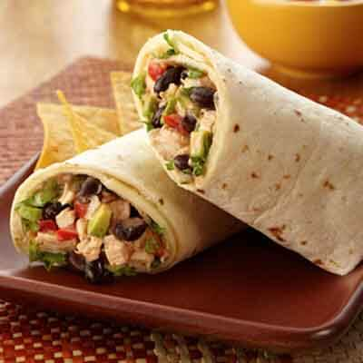

About Me
Bonjour! My name is Ian Joegriner, and I am 22 years old living in Rockville, Maryland!
I am attending Montgomery College for an AAS in Computer Gaming and Simulation!
Additionally, I am also a freelance runway and print model outside of school! Here's one of my fav pics!
Anyways, I want to talk about on of my favorite vacation spots

LA is one of my favorite cites/areas to visit. One of the reasons its fun to visit is it has many events that happen exclusively in LA.
From specialized concerts to conventions, LA always has something going on. Next thing are the beaches.
LA beaches are so lively and active. I enjoy beaches that have a good social vibe, and all of the beaches in LA have that vibe.
Finally the food. LA has a lot of really good authentic Mexican and Japanese food in the country. Everything there is worth a try!
Finally, here's somethings to do around LA for both kids and Adults!